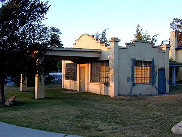
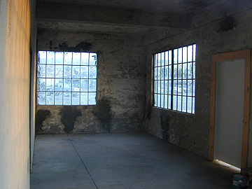

Main facade of the Carl Luck Filling Station building at the southwest corner of Lucks Park in San Juan Bautista.

Photo of the Carl Luck Filling Station after recent renovations and repairs. Concrete patching of both interior and exterior of building donated by Patrick MacDonald Masonry.

The interior of the Carl Luck Filling Station after concrete patching and gutting of the building by the Gabilan Conservation Camp.